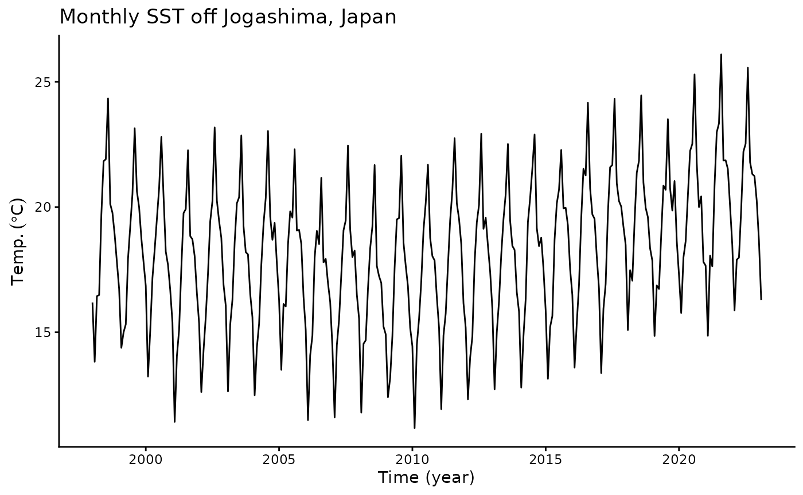
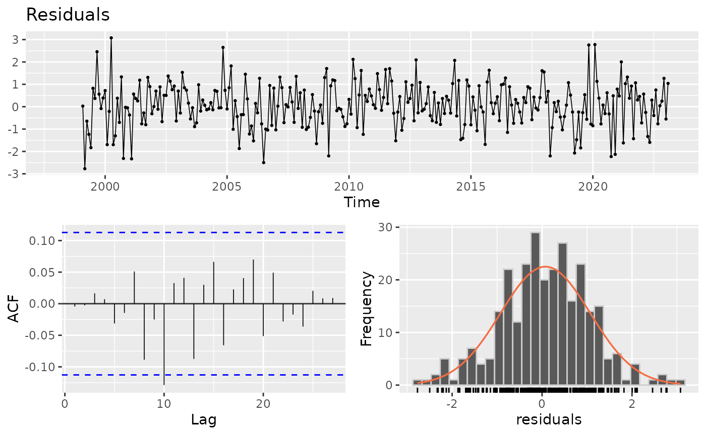
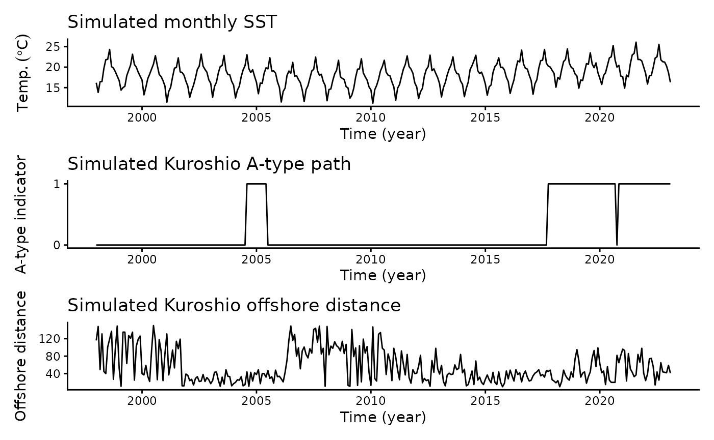
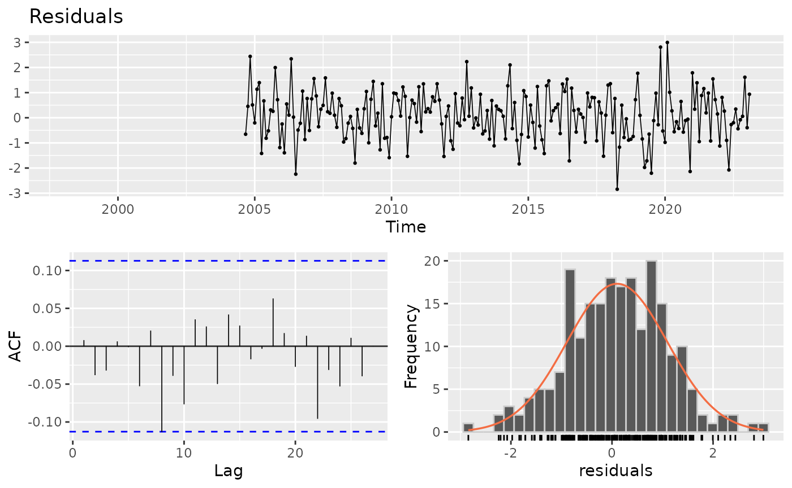

tempssm 詳細マニュアル
Version 0.3.2
平尾章・馬場真哉・市野川桃子
2026-08-06
Source:vignettes/articles/tempssm_manual_jp.Rmd
tempssm_manual_jp.Rmd概要
tempssm
は、気温や水温など、環境中で観測される温度時系列データに対して
状態空間モデルを適用するための R
パッケージです。長期トレンド、季節変動、
自己回帰的依存性、および任意の外生効果が、観測された温度の時間変動に
どのように寄与しているかを評価するための実用的な枠組みを提供します。
計算バックエンドとして KFAS R パッケージ（Helske,
2017）を用い、
カルマンフィルタリングおよび平滑化によって推定される線形ガウス状態空間モデルを
適用します。
主な特徴
- 環境中で観測される温度時系列データに線形ガウス状態空間モデルを適用
- 温度の動態を解釈しやすい潜在成分として表現： 長期トレンド、季節変動、自己回帰構造、および任意の外生効果
- 任意の季節周期に対応 （ただし実例と検証では、主として月別の温度データを対象）
- 自己回帰成分の次数をユーザーが指定可能（デフォルト: AR(1)）
- モデル評価のための時系列交差検証ツールを提供
入力データ形式
R の ts オブジェクトが、tempssm
の主要な入力データ形式です。 tempssm()
に渡す温度時系列データは、単変量の ts オブジェクトとして
与えます。任意で指定する外生変数は、単変量または多変量の ts
オブジェクトとして与えることができます。ts
クラスは、等間隔の 時系列を扱うための base R の標準的な形式です（R
公式の stats::ts ドキュメントを参照： https://search.r-project.org/R/refmans/stats/html/ts.html）。
本パッケージには、表形式データや観測データをモデル適用前に
ts
オブジェクトへ変換するためのユーティリティ関数も含まれています。
tempssm() が用いる季節周期は、入力された ts
オブジェクトの frequency
属性から決まります。たとえば、月別データでは frequency = 12
を用います。
既存研究と本パッケージの範囲
tempssm
は、線形ガウス状態空間モデルを用いて温度時系列を解析するための、
対象分野に特化したワークフローを提供します。温度データへの応用に合わせた
単一の R パッケージインターフェースの中に、モデル構築、成分抽出、
不確実性の要約、残差診断、可視化、時系列交差検証を統合しています。
本パッケージは、線形ガウス状態空間モデリング、カルマンフィルタリング、
カルマン平滑化を含む、確立された統計的方法論に基づいています。モデル推定は、
R における状態空間モデルの汎用的な枠組みを提供する KFAS
パッケージを通じて 行われます。
その他の R
パッケージは、主に可視化、時系列データの取り扱い、データ入力、
および例示を補助する目的で用いています。具体的には、パッケージ内の
プロットには ggplot2、一部の時系列変換ユーティリティには
zoo、 チュートリアルでの基本的な時系列可視化には
forecast を用いています。
初期実装は、線形ガウス状態空間モデルを用いて海水温トレンドを解析した 馬場ら (2024) に付随する補足コードに基づいています。この補足コードは 以下で公開されています。
https://github.com/logics-of-blue/sea-temperature-trend-jogashima
この先行実装と比べて、tempssm は、入力検証、文書化された
S3 メソッド、
テスト、診断、交差検証ユーティリティ、およびより広範な温度時系列解析のための
例を備えた、再利用可能な R パッケージインターフェースへとワークフローを
拡張しています。
モデル概要
tempssm で用いるモデルは、基本構造時系列モデル （Basic
Structural Time Series Model; BSTSM）を拡張したものとして
位置づけられます。BSTSMは、観測時系列を潜在的なトレンド成分、季節成分、
不規則成分から構成されるものとして表す状態空間モデルの標準的な定式化の
一つです。馬場ら (2024)
による温度時系列への適用を踏まえ、tempssm
では、BSTSMに自己回帰的依存性と任意の外生効果を加えています。これにより
長期的な温度変化、季節周期、短期的な変動を分けて検討しやすくしています。
計算バックエンドには KFAS を用い、推定済みの
tempssm オブジェクトには
フィルタリング推定値と平滑化推定値の両方が格納されます。特に断らない限り、
本マニュアルでは、要約統計、診断、プロットの解釈は平滑化推定値に
基づいています。
数式を含む詳細なモデル定式化は、vignette
model-specification を
参照してください。観測方程式、状態方程式、季節成分の制約、自己回帰成分、
外生成分、推定パラメータ数、推定手順の詳細を説明しています。PDF版は
こちらから入手できます。
https://github.com/akihirao/tempssm/blob/main/vignettes/model-specification.pdf
チュートリアルの流れ
このチュートリアルでは、tempssm
を月別の環境温度時系列へ適用する 典型的なワークフローを示します。演習 I
では、シミュレーションで生成された 海面水温（SST）データセット
sst_sim を用いて、外生変数を含まない
ベースラインの状態空間モデルを当てはめ、潜在成分の可視化、残差診断、
短期予測を行います。演習 II では、同じ流れを外生変数ありモデルへ拡張し、
シミュレーションで生成された海洋環境変数を追加することで、モデル解釈と
条件付き予測性能がどのように変わるかを、残差診断と時系列交差検証に基づいて
確認します。
ここでの目的は、シミュレーションデータから新しい科学的結論を導くことでは ありません。モデルの当てはめ、診断、予測、モデル比較の流れを、 再現可能な例として示すことを目的としています。
演習 I: 単変量温度時系列のベースラインモデル
演習 I では、外生変数を含まない単変量モデルについて、モデル適用、 潜在成分の可視化、残差診断、および短期予測の基本的なワークフローを 示します。
シミュレーション SST データセットの読み込み
パッケージには、シミュレーションで生成された月別海面水温（SST）
データセット sst_sim が含まれています。
- データセット: 城ヶ島地先（神奈川県三浦市）のシミュレーション月別 SST
- 単位: °C
- 期間: 1998 年 1 月から 2023 年 2 月
このデータセットは、馬場ら (2024) で報告された城ヶ島地先の海水温に
対する状態空間モデル解析に基づいて生成されたものです。ここでは、
tempssm
の基本的なワークフローを示すための再現可能な応答時系列として
使用します。演習 II では、この同じシミュレーション SST に、
シミュレーションで生成された海洋環境変数を組み合わせます。
## Jan Feb Mar Apr May Jun
## 1998 16.19 13.82 16.44 16.49 19.70 21.83
summary(sst_sim)## Temp
## Min. :11.17
## 1st Qu.:16.22
## Median :18.39
## Mean :18.23
## 3rd Qu.:20.11
## Max. :26.10月別 SST 時系列のプロット
まず、月別 SST 時系列を可視化し、見かけのトレンド、季節変動、欠測値の有無を含む 全体的な構造を確認しておきます。
plt_sst_sim <- forecast::autoplot(sst_sim) +
labs(y = expression(Temp.~(degree*C)),
x = "Time (year)") +
ggtitle("Monthly SST off Jogashima, Japan") +
theme_classic()
plot(plt_sst_sim)
SST の全体平均は約 18.2 °C であり、 明瞭な季節変動パターンが認められます。生の時系列からは、 記録の開始期から 2008 年前後にかけて SST が低下し、その後に上昇する ようにも見えます。ただし、年変動も認められるため、生の時系列だけから 長期パターンを評価することは容易ではありません。
線形ガウス状態空間モデルの適用
本パッケージのコア関数tempssm()に温度時系列データの
ts オブジェクト （ここでは
sst_sim）を与えて、実行すると、モデル構築から
パラメーター推定までが一挙に処理されます。
返り値として、フィルタリング推定値、平滑化推定値などの結果に加えて
、構築されたモデルや入力データなどがS3クラスのtempssmオブジェクト
（ここでは res_base ）に格納されます。
本マニュアルで用いるシミュレーション SST 系列は、馬場ら (2024) の解析に 基づき、AR(2) の設定で生成されています。そのため、この詳細例では AR(2) を ベースラインモデルとして用います。ただし、これは常に AR(2) を推奨するという 意味ではありません。このような事前情報がない場合には、デフォルトの AR(1) から 始め、残差診断や感度分析を通じて AR(2) 以上の次数を検討する流れが実用的です。
ここで AR は
autoregressive（自己回帰）を意味します。tempssm では、
自己回帰成分は、長期水準、ドリフト、季節成分では説明しきれない短期的な
系列依存性を表すために用いられます。AR(2)
は、この短期成分が直前2時点までの
値に依存するものとして表現されることを意味します。
# baseline model with a second-order autoregressive component
res_base <- tempssm(sst_sim, ar_order = 2)
summary(res_base)## tempssm summary
## -----------------
## Call:
## tempssm(temp_data = sst_sim, ar_order = 2)
##
## Model fit:
## Likelihood type: marginal
## Log-likelihood : -198.19
## k : 6
## Diffuse states : 13
## Converged : TRUE
##
## Variance parameters:
## Observation (H): 0.05517483
## State (Q trend): 4.94528e-06
## State (Q season): 0.0001859974
## State (Q ar): 0.1497546
##
## Components of auto-regression:
## Order of AR: 2
## Coefficient of AR1: 0.655325
## Coefficient of AR2: 0.0742994結果の要約から、モデルが収束したこと（Converged: TRUE)を確かめます。
その他に統計量として、パラメーター数 (k)、対数尤度 (Log-likelihood)、
尤度タイプ、散漫初期化された状態数が示されています。
パラメーター推定値は、推定された状態空間モデルにおける誤差分散と
自己回帰係数に対応します。H
は観測誤差分散であり、潜在状態では
説明されない観測温度系列の変動を表します。Q
系の項は各潜在成分の 過程誤差分散です。Q trend
は長期トレンド成分、Q season は季節成分、
自己回帰成分の過程誤差分散は短期的な自己回帰成分の変動を表します。
AR 係数は、その短期成分における系列依存性を表します。
対数尤度と対応する推定パラメーター数は、logLik()
を用いて推定済みの tempssm
オブジェクトから直接取得できます。
ll <- logLik(res_base)
ll## 'log Lik.' -198.1878 (df=6)
attr(ll, "df") # number of parameters## [1] 6tempssm() は、デフォルトでは KFAS の周辺尤度 (marginal
likelihood) を用いて
パラメーター推定をおこないます。一方で、marginal = FALSE
を明示すれば、 散漫尤度 (diffuse likelihood)
も利用できます。選択された尤度タイプは推定済みの tempssm
オブジェクトに保存され、logLik() や summary()
などの下流メソッド でも一貫して用いられます。
本パッケージでは、tempssm オブジェクトに対する AIC
は自動計算しません。 これは、状態空間モデルにおける AIC
比較では、尤度タイプ、散漫初期化、
潜在状態構造の違いなどに応じて解釈に注意が必要となる場合があるためです。
AIC をデフォルトのモデル選択基準として提示することを避けるため、
tempssm では AIC
に基づく自動比較は提供していません。その代わり、
本マニュアルでは、残差診断と時系列クロスバリデーションを組み合わせた
モデル評価の流れを重視します。なお、独自のモデル評価ワークフローで
必要となる場合に備えて、対数尤度と推定パラメーター数は
logLik() から 取得できます。
潜在成分のプロット
成分プロットでは、推定された長期水準、ドリフト、季節変動、 自己回帰的依存性を可視化します。
# plot all components at once
plot(res_base)
## [1] 0.08773294パネル左上の長期トレンドは、解析期間の前半に SST が低下し、2008 年前後 以降に上昇するパターンを示しています。この例では、解析期間全体を通した SST の平均的な年変化率は約 0.088 °C です。
ただし、この全期間平均は、時間とともに変化するドリフト成分とあわせて 解釈する必要があります。パネル右上では、ドリフトが 2008 年前後までは 負で、その後に正へ転じており、長期的な SST パターンが低下から上昇へ 移行したことに対応しています。灰色の網掛け部分は、推定された潜在状態の 95% 信頼区間を表します。
スクリプト内で明示的な関数名を使いたい場合は、
plot_tempssm_components() から同じ成分プロットを
ggplot オブジェクトとして
取得できます。個別の成分についてプロットを取得するには、component
引数を 指定します。
# extract individual component plots
plt_level <- plot_tempssm_components(res_base, component = "level")
plt_drift <- plot_tempssm_components(res_base, component = "drift")
plt_season <- plot_tempssm_components(res_base, component = "season")
plt_ar <- plot_tempssm_components(res_base, component = "ar")モデル診断
本パッケージでは、推定モデルの残差に注目して、モデルが十分に時系列構造を 捉えているかを確認するための診断用関数を提供しています。具体的には、残差の 時系列プロット、自己相関、分布、および Ljung-Box 検定を用いて、残存する 時間依存性や正規誤差仮定からの大きな逸脱がないかを確認できます。
resid <- get_tempssm_residuals(res_base)
plot_tempssm_residuals(resid)
ここでは、get_tempssm_residuals()
によって標準化再帰残差を取り出し、 plot_tempssm_residuals()
によって残差時系列プロット、ACF プロット、
ヒストグラムを確認します。3つの図は、それぞれ上段、下段左、下段右に
表示されます。これらの図を用いて、残差に留意すべきパターンが残って
いないかを確認します。
本マニュアルでは、残差診断の標準的な流れとして、まず残差を時間軸を保持した
ts
オブジェクトとして取り出し、その残差オブジェクトを診断用関数に明示的に
渡す方法を用います。この流れにより、どの時点の残差が診断に含まれているか、
また利用できない残差があるかどうかを確認しやすくなります。
get_tempssm_residuals()
は、デフォルトでは入力時系列の時間軸を保持した ts
オブジェクトとして残差を返します。欠損値または非有限の残差は
NA として
保持されます。完全な数値ベクトルを必要とする計算では、
get_tempssm_residuals(res, keep_time = FALSE)
を用います。
標準化再帰残差を時間軸を保持した ts
オブジェクトとして取り出すと、初期の 一部の残差が NA
として返される場合があります。散漫初期化を用いる
状態空間モデルでは、散漫期間中に標準化再帰残差が通常の意味で定義されない
ことがあります。そのため、これらの NA
は、その時点でモデル推定が失敗した
ことを直ちに意味するものではありません。むしろ、散漫成分が解消されるまで、
比較可能な標準化再帰残差が得られないことを示しています。
季節成分を含むモデルでは、外生変数を用いない場合でも、この現象が生じます。
季節状態は散漫初期化されるため、比較可能な標準化再帰残差が得られるまでに、
通常は少なくとも1周期分の情報が必要になります。そのため、frequency = 12
の 月別データでは、最初の約1年分の残差が NA
となる場合があります。
標準化再帰残差の NA
は、その観測値が対数尤度の計算から除外されたことを
意味するものではありません。対数尤度は、KFAS によるカルマンフィルタの
尤度計算に基づき、選択された尤度タイプに応じて散漫初期化を考慮して
計算されます。一方で、標準化再帰残差は診断用の量であり、散漫期間中には
通常の意味で利用できない場合があります。そのため、尤度に基づくモデル推定と
残差診断は関連していますが、同一の対象を同じ形で扱っているわけでは
ありません。
この点は残差診断の解釈に重要です。ACF プロットや Ljung-Box 診断は、
有限の標準化再帰残差が得られている期間に対する診断として解釈する必要が
あります。get_tempssm_residuals()
によって時間軸を保持した残差を確認する
ことで、元の時系列のどの期間が残差診断に含まれているかを把握できます。
この例では、残差 ACF プロットにおいて、連続する複数のラグにわたる 有意な自己相関や、季節周期に対応する反復的なパターンは明瞭ではありません。 多数のラグを確認する場合には、単発の突出が偶然に生じることもあるため、 ACF プロットだけでモデル変更を判断するのではなく、Ljung-Box 検定や 残差時系列プロットとあわせて解釈します。
取り出した残差系列の可視化には
plot_tempssm_residuals(resid) を用います。
この関数により、残差時系列プロット、ACF プロット、残差の頻度分布を
確認できます。Ljung-Box
診断と残差尖度をコンパクトな表として確認するには、
diagnose_residual_ts(resid)
を用います。検定に用いるラグは、デフォルトでは
入力データの季節周期に合わせており、月別データでは lag 12
を用います。
diag <- diagnose_residual_ts(resid)
print(diag)## # A tibble: 1 × 8
## lb_stat lb_lag lb_df lb_pvalue kurtosis n n_missing n_finite
## <dbl> <int> <int> <dbl> <dbl> <int> <int> <int>
## 1 9.61 12 12 0.650 3.26 302 13 289diagnose_residual_ts()
の返り値のうち、lb_stat、lb_lag、lb_pvalue
は それぞれ Ljung-Box 検定統計量、検定に用いたラグ、対応する P
値を表します。 月別時系列では、デフォルトで季節周期に対応する lag 12
が用いられます。 この例では、lag 12
までの残差自己相関に有意性は認められませんでした。
より長いラグにおける残差自己相関が気になる場合には、検定に用いるラグを 手動で指定できます。例えば、次のコードでは lag 24 および lag 36 までの Ljung-Box 検定を追加で実行します。
diag_lag24 <- diagnose_residual_ts(resid, lb_lag = 24)
diag_lag36 <- diagnose_residual_ts(resid, lb_lag = 36)
diag_lags <- rbind(diag, diag_lag24, diag_lag36)
diag_lags$check <- c("lag 12", "lag 24", "lag 36")
diag_lags[, c("check", "lb_stat", "lb_lag", "lb_pvalue", "kurtosis")]## # A tibble: 3 × 5
## check lb_stat lb_lag lb_pvalue kurtosis
## <chr> <dbl> <int> <dbl> <dbl>
## 1 lag 12 9.61 12 0.650 3.26
## 2 lag 24 19.4 24 0.729 3.26
## 3 lag 36 27.9 36 0.831 3.26この例では、lag 24 および lag 36 まで範囲を広げても、有意な残差自己相関は 認められませんでした。これらの検定結果は、残差ACFプロットとあわせて 解釈します。多数のラグを確認する場合には、少数のラグが偶然に信頼限界を 超えることもあります。一方で、周期的または連続的な突出がみられる場合には、 時間構造が残っている可能性があります。
自己回帰（AR）次数の検討
本マニュアルでは、シミュレーション SST 系列が馬場ら (2024) に基づく AR(2) 設定で生成されていることを踏まえ、AR(2) をベースライン仕様として 用います。自己回帰成分は、潜在的な水準、ドリフト、季節成分では表現されない 短期的な系列依存性を吸収するために組み込まれています。
ただし、AR次数の選択は残差診断とあわせて確認する必要があります。ここでは 感度分析として AR(1) モデルも当てはめ、同じ残差診断を繰り返します。 AR構造に関する事前情報がない応用例では、AR(1) から始め、残差自己相関が 残る場合に AR(2) などの高次モデルを検討する流れが実用的です。
# Optional sensitivity check with a first-order autoregressive component
res_ar1 <- tempssm(sst_sim, ar_order = 1)
summary(res_ar1)## tempssm summary
## -----------------
## Call:
## tempssm(temp_data = sst_sim, ar_order = 1)
##
## Model fit:
## Likelihood type: marginal
## Log-likelihood : -198.19
## k : 5
## Diffuse states : 13
## Converged : TRUE
##
## Variance parameters:
## Observation (H): 0.07496414
## State (Q trend): 4.937125e-06
## State (Q season): 0.0001763537
## State (Q ar): 0.1202156
##
## Components of auto-regression:
## Order of AR: 1
## Coefficient of AR1: 0.7579371
resid_ar1 <- get_tempssm_residuals(res_ar1)
plot_tempssm_residuals(resid_ar1)
diag_lag12_ar1 <- diagnose_residual_ts(resid_ar1, lb_lag = 12)
diag_lag24_ar1 <- diagnose_residual_ts(resid_ar1, lb_lag = 24)
diag_lag36_ar1 <- diagnose_residual_ts(resid_ar1, lb_lag = 36)
diag_lags_ar1 <- rbind(diag_lag12_ar1, diag_lag24_ar1, diag_lag36_ar1)
diag_lags_ar1$check <- c("lag 12", "lag 24", "lag 36")
diag_lags_ar1[, c("check", "lb_stat", "lb_lag", "lb_pvalue", "kurtosis")]## # A tibble: 3 × 5
## check lb_stat lb_lag lb_pvalue kurtosis
## <chr> <dbl> <int> <dbl> <dbl>
## 1 lag 12 9.68 12 0.644 3.26
## 2 lag 24 19.5 24 0.725 3.26
## 3 lag 36 27.9 36 0.831 3.26この例では、AR(1) モデルの診断結果は AR(2) のベースラインモデルと大きくは 異なりません。そのため、主な成分パターンはこの AR次数の選択に強く依存して いないことを確認しつつ、シミュレーション設定を反映して AR(2) を用います。
推定されたパラメータと潜在状態の成分
推定済みの tempssm オブジェクトには、KFAS
から返された平滑化状態推定値が
格納されています。res_base$kfs$alphahat
は、レベル、ドリフト、季節状態、
自己回帰状態などの潜在状態推定値を含む行列です。この行列を確認すると、
モデル内部で状態がどのように表現されているかを把握できます。
# Smoothing estimates
alpha_hat <- res_base$kfs$alphahat
head(alpha_hat)## level slope sea_dummy1 sea_dummy2 sea_dummy3 sea_dummy4
## Jan 1998 18.65873 -0.01907585 -2.0423835 -0.9189076 0.5624221 0.9561047
## Feb 1998 18.63966 -0.01908960 -5.0255618 -2.0423835 -0.9189076 0.5624221
## Mar 1998 18.62057 -0.01911339 -2.8254806 -5.0255618 -2.0423835 -0.9189076
## Apr 1998 18.60145 -0.01913228 -2.0500556 -2.8254806 -5.0255618 -2.0423835
## May 1998 18.58232 -0.01916623 0.2885088 -2.0500556 -2.8254806 -5.0255618
## Jun 1998 18.56316 -0.01920802 1.9920043 0.2885088 -2.0500556 -2.8254806
## sea_dummy5 sea_dummy6 sea_dummy7 sea_dummy8 sea_dummy9 sea_dummy10
## Jan 1998 1.6287761 4.9406562 2.4939170 1.9920043 0.2885088 -2.0500556
## Feb 1998 0.9561047 1.6287761 4.9406562 2.4939170 1.9920043 0.2885088
## Mar 1998 0.5624221 0.9561047 1.6287761 4.9406562 2.4939170 1.9920043
## Apr 1998 -0.9189076 0.5624221 0.9561047 1.6287761 4.9406562 2.4939170
## May 1998 -2.0423835 -0.9189076 0.5624221 0.9561047 1.6287761 4.9406562
## Jun 1998 -5.0255618 -2.0423835 -0.9189076 0.5624221 0.9561047 1.6287761
## sea_dummy11 arima1 arima2
## Jan 1998 -2.8254806 -0.2729565 -0.01238172
## Feb 1998 -2.0500556 0.1645899 -0.02028051
## Mar 1998 0.2885088 0.4780659 0.01222893
## Apr 1998 1.9920043 0.1615217 0.03552000
## May 1998 2.4939170 0.7484156 0.01200096
## Jun 1998 4.9406562 1.0843956 0.05560682通常の利用では、個別の成分を元の時系列インデックスを持つ
ts オブジェクトとして
取り出すためのヘルパー関数を使うと便利です。レベル成分は推定された長期的な
温度水準を表し、ドリフト成分はその年あたりの変化率を表します。
# Smoothing estimate of level component
level_ts <- get_level_ts(res_base)
# Smoothing estimate of drift component
drift_ts <- get_drift_ts(res_base)
# Average drift rate per year across the full period
mean_drift_year <- mean(drift_ts)
print(mean_drift_year)## [1] 0.08773294SST の平均的な年変化率は、全期間では 0.0877 °C と推定されました。ただし、 推定されたドリフトは時期によって符号が変化するため、この値は一定の上昇率ではなく、 全期間を要約したモデルベースの指標として解釈します。
短期予測
推定済みの tempssm
オブジェクトは、predict() に渡すことで短期予測を
取得できます。デフォルトでは、predict(res)
は観測期間の終了直後の 1
時点先予測値を返します。この機能は、推定モデルが水準、季節成分、
自己回帰成分をどのように外挿するかを可視化・点検する目的で有用です。
pred_1 <- predict(res_base)
pred_1## Mar
## 2023 18.32948複数時点先の予測値を取得したい場合には、n.ahead
引数を指定します。
pred_12 <- predict(res_base, n.ahead = 12)
pred_12## Jan Feb Mar Apr May Jun Jul Aug
## 2023 18.32948 18.96862 21.33573 23.08507 23.51601 26.03613
## 2024 19.09047 16.16883
## Sep Oct Nov Dec
## 2023 22.68867 22.00620 21.74783 20.19009
## 2024予測に伴う不確実性は、interval
引数を指定することで取得できます。 interval = "confidence"
は予測平均に対する信頼区間を返します。すなわち、
予測される平均的な応答値に関する不確実性を表す下限値と上限値が返されます。
一方で、interval = "prediction"
は将来観測値に対する予測区間を返します。
これは、将来の観測値そのものに関する不確実性を表す下限値と上限値であり、
観測誤差も含まれるため、通常は confidence interval よりも prediction
interval の方が広くなります。信頼水準は level
引数で指定でき、 デフォルトは 0.95 です。
pred_12_pi <- predict(
res_base,
n.ahead = 12,
interval = "prediction",
level = 0.95
)
pred_12_pi## fit lwr upr
## Mar 2023 18.32948 17.34926 19.30971
## Apr 2023 18.96862 17.85289 20.08435
## May 2023 21.33573 20.13239 22.53907
## Jun 2023 23.08507 21.82315 24.34699
## Jul 2023 23.51601 22.21214 24.81988
## Aug 2023 26.03613 24.70044 27.37183
## Sep 2023 22.68867 21.32754 24.04981
## Oct 2023 22.00620 20.62375 23.38865
## Nov 2023 21.74783 20.34675 23.14890
## Dec 2023 20.19009 18.77214 21.60804
## Jan 2024 19.09047 17.65685 20.52409
## Feb 2024 16.16883 14.72164 17.61601これらの予測値は、確定的な将来予測ではなく、モデルに基づく外挿として 解釈してください。一般に、予測期間が長くなるほど不確実性は大きくなり、 長期の予測はトレンド、季節性、自己回帰構造に関するモデル仮定の影響を 受けやすくなります。
演習 II: 外生変数を含むモデル
ここでは、外生要因が温度変動に与える影響を検討するために、 状態空間モデリングの枠組みを拡張します。具体的には、黒潮流路に関連する シミュレーション海洋環境変数を、演習 I で用いたシミュレーション SST の 外生変数として利用します。
シミュレーション海洋環境変数の読み込み
本パッケージには、2つのシミュレーション外生変数データセットが含まれています。
-
kuroshio_a_sim: 黒潮 A 型流路の月別バイナリ指標 -
distance_sim: 黒潮流路の月別離岸距離指標 - 期間: 1998 年 1 月から 2023 年 2 月
いずれも frequency = 12 の単変量 ts
オブジェクトです。これらは 馬場ら (2024)
で用いられた黒潮関連変数に基づいて生成された
月別のシミュレーションデータです。元の研究で用いられた一部の変数は
より細かい時間分解能を持っていましたが、本パッケージに含まれる
シミュレーションデータは、tempssm
の例で扱いやすいように月別時系列として 表現されています。
## Jan Feb Mar Apr May Jun
## 1998 0 0 0 0 0 0
head(distance_sim)## Jan Feb Mar Apr May Jun
## 1998 116 148 49 131 45 40
summary(kuroshio_a_sim)## kuroshio_a
## Min. :0.0000
## 1st Qu.:0.0000
## Median :0.0000
## Mean :0.2483
## 3rd Qu.:0.0000
## Max. :1.0000
summary(distance_sim)## distance
## Min. : 10.00
## 1st Qu.: 26.00
## Median : 43.00
## Mean : 55.65
## 3rd Qu.: 84.00
## Max. :150.00時系列の整合性の確認
外生変数を含む状態空間モデルでは、応答変数と外生変数が共通し、
整合した時間インデックスを持つ必要があります。この例では、sst_sim、
kuroshio_a_sim、distance_sim
は、同じ月別期間と同じ frequency を 持っています。
series_info <- tibble::tibble(
series = c("sst_sim", "kuroshio_a_sim", "distance_sim"),
start = c(
paste(start(sst_sim), collapse = "-"),
paste(start(kuroshio_a_sim), collapse = "-"),
paste(start(distance_sim), collapse = "-")
),
end = c(
paste(end(sst_sim), collapse = "-"),
paste(end(kuroshio_a_sim), collapse = "-"),
paste(end(distance_sim), collapse = "-")
),
frequency = c(
frequency(sst_sim),
frequency(kuroshio_a_sim),
frequency(distance_sim)
),
missing = c(
sum(is.na(sst_sim)),
sum(is.na(kuroshio_a_sim)),
sum(is.na(distance_sim))
)
)
series_info## # A tibble: 3 × 5
## series start end frequency missing
## <chr> <chr> <chr> <dbl> <int>
## 1 sst_sim 1998-1 2023-2 12 0
## 2 kuroshio_a_sim 1998-1 2023-2 12 0
## 3 distance_sim 1998-1 2023-2 12 0ユーザー自身の時系列データで開始時点や終了時点が異なる場合には、
trim_ts_overlap()
を用いて、応答系列と外生変数系列を共通の重複期間に
切り出してからモデルを当てはめることができます。
応答変数と外生変数のプロット
シミュレーション SST と2つの黒潮関連変数をあわせて可視化し、 データセット全体の構造を確認します。
plt_sst_exo <- forecast::autoplot(sst_sim) +
labs(y = expression(Temp.~(degree*C)), x = "Time (year)") +
ggtitle("Simulated monthly SST") +
theme_classic()
plt_kuroshio_a <- forecast::autoplot(kuroshio_a_sim) +
labs(x = "Time (year)", y = "A-type indicator") +
ggtitle("Simulated Kuroshio A-type path") +
scale_y_continuous(breaks = c(0, 1)) +
theme_classic()
plt_distance <- forecast::autoplot(distance_sim) +
labs(x = "Time (year)", y = "Offshore distance") +
ggtitle("Simulated Kuroshio offshore distance") +
theme_classic()
plt_sst_exo + plt_kuroshio_a + plt_distance +
patchwork::plot_layout(ncol = 1)
ここで用いるシミュレーション外生変数には欠測値は含まれていません。
ユーザー自身の外生変数データを用いる場合、欠測値はモデル当てはめの前に
補完する、欠測期間を除外する、または解析期間を調整するなどして、
外生変数に NA
が残らない形に整えてください。tempssm() は外生変数の
欠測値を許容しません。一方で、
従属変数である温度時系列の欠測値は、カルマンフィルタリングおよび平滑化に
おいて未観測応答として扱われます。
ベースラインモデルの再利用
演習 II では演習 I と同じ応答系列を用いるため、外生変数なしの参照モデルとして、 既に当てはめた AR(2) のベースラインモデルを再利用します。
res_without <- res_base
summary(res_without)## tempssm summary
## -----------------
## Call:
## tempssm(temp_data = sst_sim, ar_order = 2)
##
## Model fit:
## Likelihood type: marginal
## Log-likelihood : -198.19
## k : 6
## Diffuse states : 13
## Converged : TRUE
##
## Variance parameters:
## Observation (H): 0.05517483
## State (Q trend): 4.94528e-06
## State (Q season): 0.0001859974
## State (Q ar): 0.1497546
##
## Components of auto-regression:
## Order of AR: 2
## Coefficient of AR1: 0.655325
## Coefficient of AR2: 0.0742994これにより、比較の焦点をシミュレーション黒潮変数によって追加される情報に 絞ることができます。
外生変数の結合
tempssm() の exo_data 引数には、単変量
ts オブジェクトまたは 多変量 ts
オブジェクトを与えることができます。この演習では2つの外生変数を
用いるため、kuroshio_a_sim と distance_sim
を1つの多変量 ts オブジェクトに結合します。
exo_kuroshio <- cbind(kuroshio_a_sim, distance_sim)
colnames(exo_kuroshio) <- c("kuroshio_a", "distance")
head(exo_kuroshio)## kuroshio_a distance
## Jan 1998 0 116
## Feb 1998 0 148
## Mar 1998 0 49
## Apr 1998 0 131
## May 1998 0 45
## Jun 1998 0 40
start(exo_kuroshio)## [1] 1998 1
end(exo_kuroshio)## [1] 2023 2
frequency(exo_kuroshio)## [1] 12
colnames(exo_kuroshio)## [1] "kuroshio_a" "distance"## [1] 0得られたオブジェクトのクラスは mts であり、base R の
ts クラスの
多変量形式です。各列は別々の外生変数として扱われ、列名は要約や係数表の
ラベルとして用いられます。
外生変数ありモデルの適用
次に、2つのシミュレーション黒潮変数を exo_data
として与えたモデルを 当てはめます。
## tempssm summary
## -----------------
## Call:
## tempssm(temp_data = sst_sim, exo_data = exo_kuroshio, ar_order = 2)
##
## Model fit:
## Likelihood type: marginal
## Log-likelihood : -154.36
## k : 8
## Diffuse states : 15
## Converged : TRUE
##
## Variance parameters:
## Observation (H): 0.02922767
## State (Q trend): 4.146953e-06
## State (Q season): 0.000686752
## State (Q ar): 0.1157463
##
## Components of auto-regression:
## Order of AR: 2
## Coefficient of AR1: 0.8038683
## Coefficient of AR2: -0.1059025
##
## Exogenous variable kuroshio_a distance
## Estimated coefficient 0.5079594 -0.00707018
## Lower CI 0.1635527 -0.008465811
## Upper CI 0.8523662 -0.005674548
resid_with <- get_tempssm_residuals(res_with)
plot_tempssm_residuals(resid_with)
diag_res_with <- diagnose_residual_ts(resid_with)
print(diag_res_with)## # A tibble: 1 × 8
## lb_stat lb_lag lb_df lb_pvalue kurtosis n n_missing n_finite
## <dbl> <int> <int> <dbl> <dbl> <int> <int> <int>
## 1 6.47 12 12 0.891 3.06 302 80 222残差時系列プロットからは、散漫初期化による散漫成分が解消されるまでの期間に
対応して、標準化再帰残差が NA となる期間が 2004
年まで及んでいることが 見て取れます。このモデルの残差診断でも、lag 12
までの有意な残差自己相関は 認められません。
したがって、ここで比較する2つのモデルでは、AR(2) は許容できる仕様と
考えられます。
次に、外生変数の推定係数を確認します。
exo_coef## Variable Coefficient lwr upr
## 1 kuroshio_a 0.50795945 0.163552663 0.852366229
## 2 distance -0.00707018 -0.008465811 -0.005674548係数表は、潜在成分を考慮したうえで、SST
と各シミュレーション黒潮変数との
推定された関係を要約しています。このモデルでは、kuroshio_a
の推定係数は 0.51 °C であり、95% 信頼区間は 0.16 から 0.85
です。kuroshio_a はバイナリ指標なので、
この係数は、他のモデル成分と distance
を条件づけたうえでの、A 型条件と 非 A 型条件の推定 SST
差として解釈することができます。
distance の推定係数は -0.007 °C/単位であり、 95%
信頼区間は -0.008 から -0.006 です。これは、潜在成分と
kuroshio_a を
条件づけたうえで、シミュレーション距離指標の値が大きいほど SST
がわずかに 低くなることを意味します。
これらはシミュレーション例に基づく推定値であり、複数の外生変数を持つモデルを 当てはめ、係数を確認する方法を示すためのものです。黒潮流路に関する新しい 科学的証拠として解釈するものではありません。
外生変数を含むモデルで predict()
を用いる場合、将来時点の外生変数の値が
必要です。利用可能な場合は、exo_data と同じ変数・同じ列順で
new_exo_data に与えます。1時点先の簡易的な可視確認として、
exo_strategy = "last"
を指定すると、最後に観測された外生変数の行を
将来値として持ち越す持続性仮定を用います。
pred_with_last_exo <- predict(res_with, exo_strategy = "last")
pred_with_last_exo## Mar
## 2023 18.3759推定成分の比較
2つのモデルの平滑化された点推定値を重ねて表示し、推定された長期トレンドと ドリフトを比較します。
level_without <- get_level_ts(res_without)
level_with <- get_level_ts(res_with)
drift_without <- get_drift_ts(res_without)
drift_with <- get_drift_ts(res_with)
component_compare <- rbind(
data.frame(
time = as.numeric(time(level_without)),
component = "Level component (°C)",
model = "Without exogenous variables",
estimate = as.numeric(level_without)
),
data.frame(
time = as.numeric(time(level_with)),
component = "Level component (°C)",
model = "With Kuroshio variables",
estimate = as.numeric(level_with)
),
data.frame(
time = as.numeric(time(drift_without)),
component = "Drift component (°C/year)",
model = "Without exogenous variables",
estimate = as.numeric(drift_without)
),
data.frame(
time = as.numeric(time(drift_with)),
component = "Drift component (°C/year)",
model = "With Kuroshio variables",
estimate = as.numeric(drift_with)
)
)
component_compare$component <- factor(
component_compare$component,
levels = c("Level component (°C)", "Drift component (°C/year)")
)
plt_component_compare <- ggplot(
component_compare,
aes(x = time, y = estimate, color = model)
) +
geom_line(linewidth = 0.8) +
facet_wrap(~ component, ncol = 1, scales = "free_y") +
labs(x = "Time (year)", y = "Estimate", color = "Model") +
theme_classic()
plot(plt_component_compare)
mean_drift_year_without <- mean(drift_without, na.rm = TRUE)
mean_drift_year_with <- mean(drift_with, na.rm = TRUE)
mean_drift_year_without## [1] 0.08773294
mean_drift_year_with## [1] 0.04920045レベル成分では、両モデルとも、記録の開始期から 2008 年前後まで低下し、 その後に上昇する大局的なパターンを示しています。ただし、外生変数ありモデルは、 外生変数なしモデルと比べて、前半の水準を高めに、後半の水準をやや低めに 推定しています。
モデル間の違いは、ドリフト成分でより明瞭です。外生変数なしモデルでは、 変化率に局所的な揺らぎがみられる一方、シミュレーション黒潮変数を含むモデルでは、 負から正への移行がより滑らかに推定されています。このことは、ベースラインモデルの ドリフト成分に表れていた短期から中期的な変動の一部が、シミュレーション外生変数に よって説明されている可能性を示唆します。
観測期間を通した SST の年あたりの変化率の推定値は、外生変数なしモデルでは 0.0877、外生変数ありモデルでは 0.0492 となりました。
このシミュレーション例は、外部要因を含めることで、推定される長期成分が 変化しうることを示しています。
次節では、この違いが条件付き予測性能にも反映されるかを時系列交差検証で 確認します。
時系列交差検証（tsCV）による条件付き予測性能の評価
時系列交差検証（tsCV）は、時間順序を保ちながら標本外予測誤差を評価する 方法です。モデルを訓練期間に繰り返し当てはめ、その後続の観測値に対する 予測性能を評価するため、未来から過去への情報漏洩を避けることができます。
ここでは、シミュレーション黒潮変数を含むモデルと含まないモデルを比較し、 外生変数として追加した情報が標本外予測性能にも反映されるかを評価します。
外生変数ありモデルでは、テスト期間のシミュレーション黒潮変数の値を 予測ステップに与えています。したがって、この tsCV は、各テスト期間の 外生変数値が既知であるという条件下での conditional forecast、または hindcast 的な評価に相当します。
実際の将来予測では、将来の外生変数値は通常未知です。その場合には、 将来シナリオを与える、外生変数自体を別モデルで予測する、あるいは 最終観測値を持ち越すような簡易仮定を用いる、といった対応が必要になります。 したがって、以下の結果は条件付き予測性能の評価として解釈してください。
## Generate a list of training and test datasets with their indices
# Procedure for constructing year-based time-series cross-validation folds:
#
# First training data: January 1998-December 2010;
# First test data: January 2011-December 2011
#
# Second training data: January 1999-December 2011;
# Second test data: January 2012-December 2012
# ...
#
# Twelfth training data: January 2009-December 2021;
# Twelfth test data: January 2022-December 2022
#
# These folds are automatically generated by the ts_train_test_split() function.
# The final two observations in 2023 are not used because allow_partial = FALSE
# keeps every test set as a complete 12-month period.
# Generate training and test dataset for model without exogenous variables
folds_without <- ts_train_test_split(
temp_data = sst_sim,
exo_data = NULL,
initial = 156, # 156 monthly observations from Jan 1998 to Dec 2010
horizon = 12, # forecast 12 monthly observations
step = 12, # move the fixed-width window in one-year steps
fixed_window = TRUE,
allow_partial = FALSE
)
# Generate training and test dataset for model with Kuroshio variables
folds_with <- ts_train_test_split(
temp_data = sst_sim,
exo_data = exo_kuroshio,
initial = 156, # 156 monthly observations from Jan 1998 to Dec 2010
horizon = 12, # forecast 12 monthly observations
step = 12, # move the fixed-width window in one-year steps
fixed_window = TRUE,
allow_partial = FALSE
)
# Check the first fold
start(folds_without[[1]]$train_ts)## [1] 1998 1
end(folds_without[[1]]$train_ts)## [1] 2010 12
start(folds_without[[1]]$test_ts)## [1] 2011 1
end(folds_without[[1]]$test_ts)## [1] 2011 12
# *****************************************
# Executing time-series cross validation
#--------------------------------------------------
# Model without exogenous variables
# ts_cv_run() evaluates folds sequentially by default.
cv_without_results <- ts_cv_run(
folds_without,
ar_order = 2,
use_season = TRUE
)
# Optional parallel execution:
# Calling library(future) or library(future.apply) is not required here,
# but these suggested packages must be installed.
# cv_without_results <- ts_cv_run(
# folds_without,
# ar_order = 2,
# use_season = TRUE,
# parallel = TRUE,
# workers = 2
# )
# Computing assessment indexes
metrics_without <- lapply(cv_without_results, compute_cv_metrics)
# tidy summary
cv_without_tbl <- ts_cv_collect(cv_without_results, metrics_without) %>%
mutate(Model="Without")
#--------------------------------------------------
# Model with simulated Kuroshio exogenous variables
cv_with_results <- ts_cv_run(
folds_with,
ar_order = 2,
use_season = TRUE
)
# Optional parallel execution:
# Calling library(future) or library(future.apply) is not required here,
# but these suggested packages must be installed.
# cv_with_results <- ts_cv_run(
# folds_with,
# ar_order = 2,
# use_season = TRUE,
# parallel = TRUE,
# workers = 2
# )
# Computing assessment indexes
metrics_with <- lapply(cv_with_results, compute_cv_metrics)
# tidy summary
cv_with_tbl <- ts_cv_collect(cv_with_results, metrics_with) %>%
mutate(Model="With")
cv_tbl <- bind_rows(cv_without_tbl, cv_with_tbl)
cv_comparison <- compare_ts_cv(
list(
Without = cv_without_tbl,
With = cv_with_tbl
)
)
cv_comparison %>% knitr::kable()| model | n_folds | converged_n | converged_rate | mean_MAE | mean_MASE_naive | mean_MASE_seasonal |
|---|---|---|---|---|---|---|
| Without | 12 | 12 | 1 | 0.5346914 | 0.3120579 | 0.7954258 |
| With | 12 | 12 | 1 | 0.5136672 | 0.2998310 | 0.7708534 |
plt_MAE <- ggplot(data=cv_tbl,
aes(x=Model,y=MAE)) +
geom_boxplot()
plt_MASE_naive <- ggplot(data=cv_tbl,
aes(x=Model,y=MASE_naive)) +
geom_boxplot()
plt_MASE_seasonal <- ggplot(data=cv_tbl,
aes(x=Model,y=MASE_seasonal)) +
geom_boxplot()
plt_tsCV <- plt_MAE + plt_MASE_naive + plt_MASE_seasonal +
patchwork::plot_layout(nrow = 1)
plot(plt_tsCV)
3つの精度指標は、予測誤差を異なる観点から要約します。MAE
は平均絶対誤差で、 応答変数と同じ単位、ここでは °C
で表されます。MASE は、訓練データから
計算される単純なベンチマークに対する、単位を持たないスケール化誤差です。
いずれの指標も、小さいほど予測性能が高いことを意味します。
このチュートリアルでは、MASE_naive
は訓練系列の1期差分に基づく 非季節 naive
ベンチマークを用います。MASE_seasonal は、訓練系列の
季節周期だけ離れた差分に基づく seasonal naive ベンチマークを用います。
月別データでは、これは12か月差分に対応します。MASE が 1 未満であれば、
平均的には対応する naive ベンチマークよりも良い予測性能を示します。
compare_ts_cv() によって作成された比較表では、各モデルの
fold 数、
収束率、および平均的な予測誤差指標を確認できます。箱ひげ図からは、
検証期間ごとの誤差のばらつきを確認できます。このチュートリアルでは 12
個の年次テスト期間を用いており、この例題データ内で2つの
モデル仕様を比較する実用的な基盤となります。正式なモデル評価では、
時系列の長さ、予測期間、予測目的に応じて fold
の数と構造を決めてください。
外生変数ありモデルの平均 MAE は約 0.51 °C です。 月別平均に基づく季節変動幅（約 9.9 °C） と比べると、これは約 5.2% に相当します。 したがって、このデータセットにおける主要な季節変動スケールと比べれば、 予測誤差は小さく、目的に応じては実用的な精度のモデルと解釈できる可能性が あります。
外生変数ありモデルは、外生変数なしモデルに比べて平均 MAE を約 3.9% 低下させました。同様の改善は MASE 指標でも確認されます。ただし、この解釈は、テスト期間の シミュレーション黒潮変数を外生変数として与える条件付き予測の設定に 基づくものです。
係数推定、推定成分の比較、tsCV の結果をあわせて確認することで、 外生変数ありモデルを多面的に評価できます。ここで用いたデータは シミュレーションデータであるため、黒潮変動に関する新しい科学的結論ではなく、 ワークフローの例として解釈してください。同様の流れは、他の環境・気候・ 生態学的な共変量にも拡張できます。その際には、モデル診断、予測性能、 将来の外生変数に関する仮定を明示的に確認することが重要です。
ユーザーのオリジナルデータの使用について
CSV 形式
月別温度時系列の CSV
ファイルでは、Year、Month、Temp
という列を 用意します。 - Year - Month - Temp
例:
Year,Month,Temp
2010,8,13.6
2010,9,6.8
2010,10,NA
2010,11,-1.4
...- 欠測した温度値には NA を使用し、対応する Year と Month の行は 必ず保持してください。
- CSV ファイルはカンマ区切りで、UTF-8 エンコーディングとしてください。
CSV から ts オブジェクトへの変換
本パッケージに同梱するサンプル CSV ファイルは
inst/extdata にあります。
このサンプルデータセットには、北海道赤岳（1,840
m）における月別気温観測値が
含まれています。オリジナルデータは環境省のモニタリングサイト 1000
（KOZ01.zip、https://www.biodic.go.jp/moni1000/findings/data/index.html）
から入手可能です。
path <- system.file("extdata", "example_monthly_temp.csv", package = "tempssm")
akadake_temp <- tempssm::read_monthly_temp_ts(path)
head(akadake_temp)## Jan Feb Mar Apr May Jun Jul Aug Sep Oct Nov Dec
## 2010 13.6 6.8 0.2 -6.8 -12.5
## 2011 -18.8read_monthly_temp_ts() 関数は、このような CSV
ファイルを読み込み、 tempssm() で利用できる R の
ts オブジェクトへ変換します。
より細かな制御が必要な場合は、手動で ts
オブジェクトを作成することも できます。詳細は R 公式の
stats::ts ドキュメントを参照してください： https://search.r-project.org/R/refmans/stats/html/ts.html。
データがすでに R の ts
オブジェクトとして保存されている場合は、 そのまま tempssm()
に渡すことができます。
参考文献
tempssm に実装されている統計モデリングの枠組みは、馬場ら
(2024) に記述された方法論に基づいており、付随する補足資料および
コードリポジトリが本パッケージ開発の初期ソースとなっています。
馬場真哉, 石井 洋, 芳山 拓. (2024). 線形ガウス状態空間モデルを用いた神奈川県城ヶ島地先における海水温トレンドの推定. 水産海洋研究, 88(3), 190–199. https://doi.org/10.34423/jsfo.88.3_190
馬場真哉. (2024). 線形ガウス状態空間モデルを用いた海水温トレンド推定のための補足コードおよび テストデータ. GitHub リポジトリ: https://github.com/logics-of-blue/sea-temperature-trend-jogashima
Helske, J. (2017). KFAS: KFAS: Exponential family state space models in R. Journal of Statistical Software, 78(10), 1–39. https://doi.org/10.18637/jss.v078.i10
付録: ユーティリティ関数
データ準備と探索的解析を支援するために、以下のユーティリティ関数が 提供されています。
1. read_monthly_temp_ts()
read_monthly_temp_ts() 関数は、CSV
ファイルに保存された月別温度データを R の ts
オブジェクトへ変換します。単純で一貫したデータ形式を課すことで、
外部で準備された時系列データを tempssm
に取り込みやすくすることを目的としています。
例
月別温度データでは、ヘッダー行をもつ CSV
ファイルを準備します。デフォルトでは 、列名は
Year、Month、Temp
である必要があります。ここで Temp は
観測された温度値を表します。
Year,Month,Temp
2001,1,10.4
2001,2,8.2
2001,3,NA
2001,4,13.6
2001,5,16.1
...- 欠測した温度値には NA を使用し、対応する Year と Month の行は 必ず保持してください。
- CSV ファイルはカンマ区切りで、UTF-8 エンコーディングとしてください。
次の例では、パッケージに含まれるサンプル CSV ファイルを使用します。この ファイルには、北海道赤岳における月別気温観測値が含まれています。
path <- system.file("extdata", "example_monthly_temp.csv", package = "tempssm")
# Read the CSV file and convert it to a monthly ts object
temp_ts <- read_monthly_temp_ts(path)
head(temp_ts)## Jan Feb Mar Apr May Jun Jul Aug Sep Oct Nov Dec
## 2010 13.6 6.8 0.2 -6.8 -12.5
## 2011 -18.82. convert_monthly_df_to_ts()
convert_monthly_df_to_ts()
関数は、月別温度データを含むデータフレームを R の ts
オブジェクトへ変換します。この関数は、温度データをまずデータフレーム
として読み込みまたは準備し、その後に時系列解析で使用するワークフローを
支援するために設計されています。
入力データフレームには、少なくとも日付列（Date）と温度列（Temp）の
2
列が含まれていることが想定されています。なお日付列（Date）について、
月別の温度の集計値と対応させるために、日は任意の日数（たとえば１日)
を与えてください。
例
# Create a data frame of monthly temperature data
df <- data.frame(
Date = as.Date(c(
"2001-01-01",
"2001-02-01",
"2001-03-01",
"2001-04-01",
"2001-05-01")
),
Temp = c(10.4, 8.2, NA, 13.6, 16.1)
)
# Convert to a monthly ts object
temp_ts <- convert_monthly_df_to_ts(df)
head(temp_ts)## Jan Feb Mar Apr May
## 2001 10.4 8.2 NA 13.6 16.13. get_jma_sst_ts()
get_jma_sst_ts()
関数は、気象庁（JMA）が提供する日本沿岸域の日平均海面水温
（SST）データをダウンロードします。日別値を月平均へ集計し、得られた時系列を
ts クラスのオブジェクトとして返します。
例
次の例では、茨城県南部沿岸域の SST データをダウンロードする方法を示します。
引数 sea_area_id は、JMA によって定義された海域の数値 ID
を指定します。 例えば、138
は茨城県南部沖の沿岸域に対応します。利用可能な海域 ID と対応す
地域の一覧は、JMA により以下で提供されています。
https://www.data.jma.go.jp/kaiyou/data/db/kaikyo/series/engan/eg_areano.html
sst_138_ts <- get_jma_sst_ts(sea_area_id = 138)
head(sst_138_ts)## Jan Feb Mar Apr May Jun
## 1982 15.04419 14.22500 13.63903 15.31933 17.52258 19.523004. compute_temp_anomaly()
compute_temp_anomaly() 関数は、R の ts
オブジェクトとして与えられた
時系列から偏差を計算します。偏差は、各観測値から対応する周期単位（たとえば月）の
長期平均を差し引くことで計算され、周期の影響を取り除いた年変動パターンの確認
などに用いられます。
偏差を計算するための基準期間は、関数引数で指定できます。デフォルトでは、利用
可能な時系列全体を用いて平年値が計算されます（?compute_temp_anomaly
を参照）。
この変換は、典型的な季節条件からのずれに注目する探索的解析やモデリング用途で 有用です。
例
# Generate temperature anomalies
data(sst_niigata)
sst_niigata_anomaly <- compute_temp_anomaly(sst_niigata)
plt_sst_niigata_anomaly <- forecast::autoplot(sst_niigata_anomaly) +
labs(y = expression(Temp.~(degree*C)),
x = "Time (year)")
plot(plt_sst_niigata_anomaly) 
5. compute_monthly_climatology()
compute_monthly_climatology() 関数は、ts
オブジェクトから、各季節値を 年をまたいで平均することにより、気候値
(climatology: 気候学的な平均季節周期) を
計算します。主として、温度時系列における季節構造の探索的解析と可視化を
目的としています。
例
data(sst_niigata)
monthly_seasonal_cycle_sst_niigata <- compute_monthly_climatology(sst_niigata)
summary(monthly_seasonal_cycle_sst_niigata)## Month Temperature
## Min. : 1.00 Min. : 9.365
## 1st Qu.: 3.75 1st Qu.:11.169
## Median : 6.50 Median :16.318
## Mean : 6.50 Mean :17.036
## 3rd Qu.: 9.25 3rd Qu.:22.294
## Max. :12.00 Max. :26.873
plt_monthly_seasonal_cycle_sst_niigata <- ggplot(
data = monthly_seasonal_cycle_sst_niigata,
aes(x = Month, y = Temperature)
) +
geom_point(size = 2) +
geom_line(linetype = "dashed") +
labs(
title = "Monthly seasonal cycle of temperature",
x = "Month",
y = expression(Temp.~(degree*C))
) +
scale_x_continuous(
breaks = 1:12,
labels = sprintf("%02d", 1:12)
) +
theme_classic()
plot(plt_monthly_seasonal_cycle_sst_niigata)